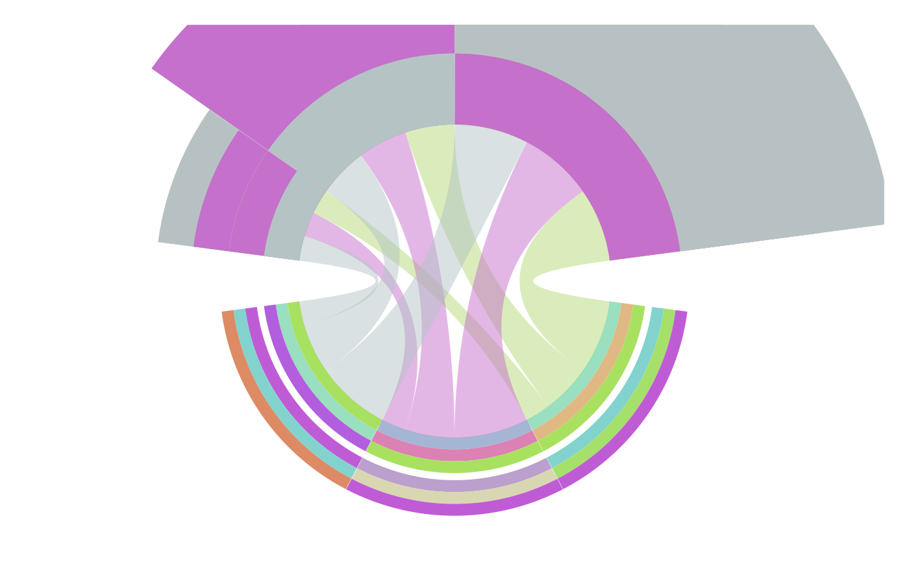

add.do.Rdadd.do(x = x, h = h, col = col, .order = NA, begin = 0, position = "fill", scale_height = 1, scale.col = NA)A numeric vector or a character,is circlize current sector index ,using get.current.sector.index() to reading
A numeric vector or a character. If it is a character, will scale to the height of heatmap.
A numeric vector or a character. If it is a character, will scale to the height of heatmap. Gradient
A vector color or histogram and sorting of the heatmap
Starting position
position=c("fill","stack"), "stack" is Stacked histogram ,"fill is percentage
Standardized height
A color vector, name is String or number
# data col
data = data.frame(from = rep(letters[1:3],each=3), to = LETTERS[1:3], value = 1:3)
structure(c("red"), names = c("a"))->col
set.seed(2)
#heatmap
x=rep(c("a","b","c"),3);
col<-(c("a","b","c","e","f","a","c","c","A"));
#col= rnorm(9) ;
h=rep(c("a","b","c"),each=3);
structure(c("red","blue","grey"), names = c("a",-1,5))->scale.col
structure(c("red","blue","grey"), names = c("e","d","c"))->scale.col
.order<-c("a","b","c")
structure(c(max(col),median(col),min(col)),
names = c("red","grey","blue"
))->scale.col
chord(data,col=col,scale = F)->chor
#> Note: 3 points are out of plotting region in sector 'a', track '1'.
#> Note: 3 points are out of plotting region in sector 'b', track '1'.
#> Note: 3 points are out of plotting region in sector 'c', track '1'.
#> Note: 3 points are out of plotting region in sector 'A', track '1'.
#> Note: 3 points are out of plotting region in sector 'B', track '1'.
#> Note: 3 points are out of plotting region in sector 'C', track '1'.
add.do(x=x,h=h,col=col,begin=-0.1,.order =.order,scale.col = scale.col ,
scale_height = 0.5)->len
#> Warning: the condition has length > 1 and only the first element will be used
#> Note: 3 points are out of plotting region in sector 'a', track '1'.
#> Note: 3 points are out of plotting region in sector 'b', track '1'.
#> Note: 3 points are out of plotting region in sector 'c', track '1'.
add.do(x=x,h=h,col=col,begin=0.5,.order =.order,scale.col = scale.col ,
scale_height = 0.5)->len
#> Warning: the condition has length > 1 and only the first element will be used
#draw(h)
#draw(len)
#bar
h=c(1,2,3,0.5);
x=c("A","B","C","A");
col<-c("a","e","a","b")
structure(c("red","blue","grey"), names = c("a",-1,5))->scale.col
structure(c("red","blue","black"), names = c("e","d","c"))->scale.col
.order<-c("a","b","e")
add.do(x=x,h=h,col=col,begin=-0.1,position = "stack",
scale_height = 0.6)->len2
#> Note: 3 points are out of plotting region in sector 'A', track '1'.
#> Note: 2 points are out of plotting region in sector 'A', track '1'.
#> Note: 3 points are out of plotting region in sector 'A', track '1'.
#> Note: 5 points are out of plotting region in sector 'B', track '1'.
#> Note: 5 points are out of plotting region in sector 'B', track '1'.
#> Note: 5 points are out of plotting region in sector 'B', track '1'.
#> Note: 5 points are out of plotting region in sector 'C', track '1'.
#> Note: 5 points are out of plotting region in sector 'C', track '1'.
#> Note: 5 points are out of plotting region in sector 'C', track '1'.
add.do(x=x,h=h,col=col,begin=0.9,position = "stack",
scale_height = 0.6)->len2
#> Note: 2 points are out of plotting region in sector 'A', track '1'.
#> Note: 3 points are out of plotting region in sector 'A', track '1'.
#> Note: 2 points are out of plotting region in sector 'A', track '1'.
#> Note: 2 points are out of plotting region in sector 'B', track '1'.
#> Note: 3 points are out of plotting region in sector 'B', track '1'.
#> Note: 2 points are out of plotting region in sector 'C', track '1'.
#> Note: 3 points are out of plotting region in sector 'C', track '1'.

x=c("a","b","c","a");
col<-c("a","e","a","b")
structure(c("red","blue","grey"), names = c("a",-1,5))->scale.col
structure(c("red","blue","black"), names = c("e","d","c"))->scale.col
.order<-c("a","b","e")
#add.do(x=x,h=h,col=col,begin=0.5,position = "fill",scale_height = 0.4)->len3
x=c("a","b","c");h=c(1:3);col=(1:3)
structure(c("red","black","blue"), names = c(1,2.7,3))->scale.col
add.do(x=x,h=h,col=col,begin=0.6,scale_height = 0.3,
scale.col=scale.col)->len3
#> Warning: the condition has length > 1 and only the first element will be used
#> Warning: NAs introduced by coercion
#> Error in polygon(polar2Cartesian(d2), ...): invalid color name 'FF'
add.do(x=x,h=h,col=col,begin=0.8,
scale_height = 0.8,scale.col=scale.col)->len3
#> Warning: the condition has length > 1 and only the first element will be used
#> Warning: NAs introduced by coercion
#> Note: 2 points are out of plotting region in sector 'a', track '1'.
#> Error in polygon(polar2Cartesian(d2), ...): invalid color name 'FF'
x=c("a","b","c") ;name=c("ggplot","gglen","wanf")
add.name(x,name,begin =9)
#> Note: 1 point is out of plotting region in sector 'a', track '1'.
#> Note: 1 point is out of plotting region in sector 'a', track '1'.
#> Note: 1 point is out of plotting region in sector 'b', track '1'.
#> Note: 1 point is out of plotting region in sector 'b', track '1'.
#> Note: 1 point is out of plotting region in sector 'c', track '1'.
#> Note: 1 point is out of plotting region in sector 'c', track '1'.
x=rep(c("a","b","c"),3);
#col= rnorm(9) ;
h=rep(c("a","b","c"),each=3);
pch<-c("a","b","c")
.order<-c("a","c","b")
structure(c("a","b","c"), names = c(1,2,3))->scale.pch
add.pch(x=x,h=h,pch=pch,begin =2,
scale_height = 3,col="red")
#> Note: 1 point is out of plotting region in sector 'a', track '1'.
#> Note: 1 point is out of plotting region in sector 'a', track '1'.
#> Note: 1 point is out of plotting region in sector 'a', track '1'.
#> Note: 1 point is out of plotting region in sector 'b', track '1'.
#> Note: 1 point is out of plotting region in sector 'b', track '1'.
#> Note: 1 point is out of plotting region in sector 'b', track '1'.
#> Note: 1 point is out of plotting region in sector 'c', track '1'.
#> Note: 1 point is out of plotting region in sector 'c', track '1'.
#> Note: 1 point is out of plotting region in sector 'c', track '1'.